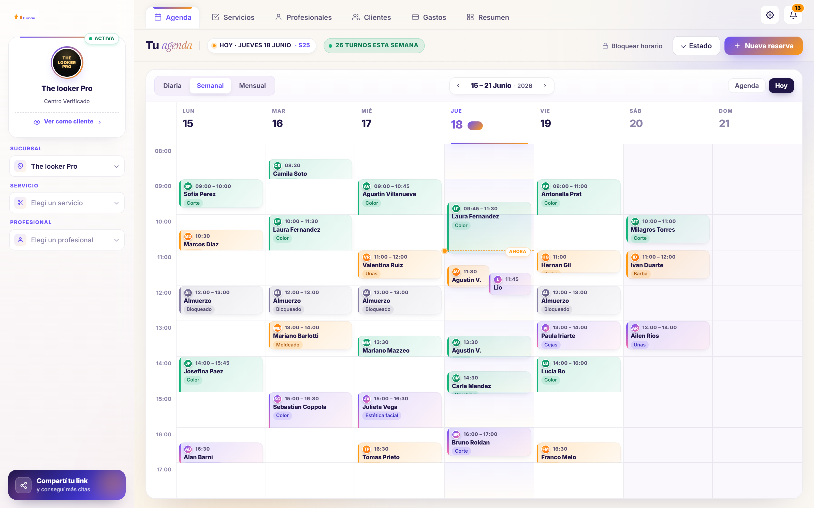
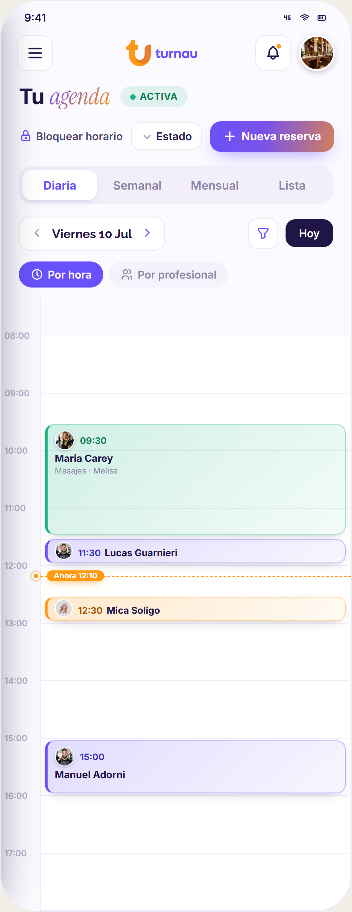
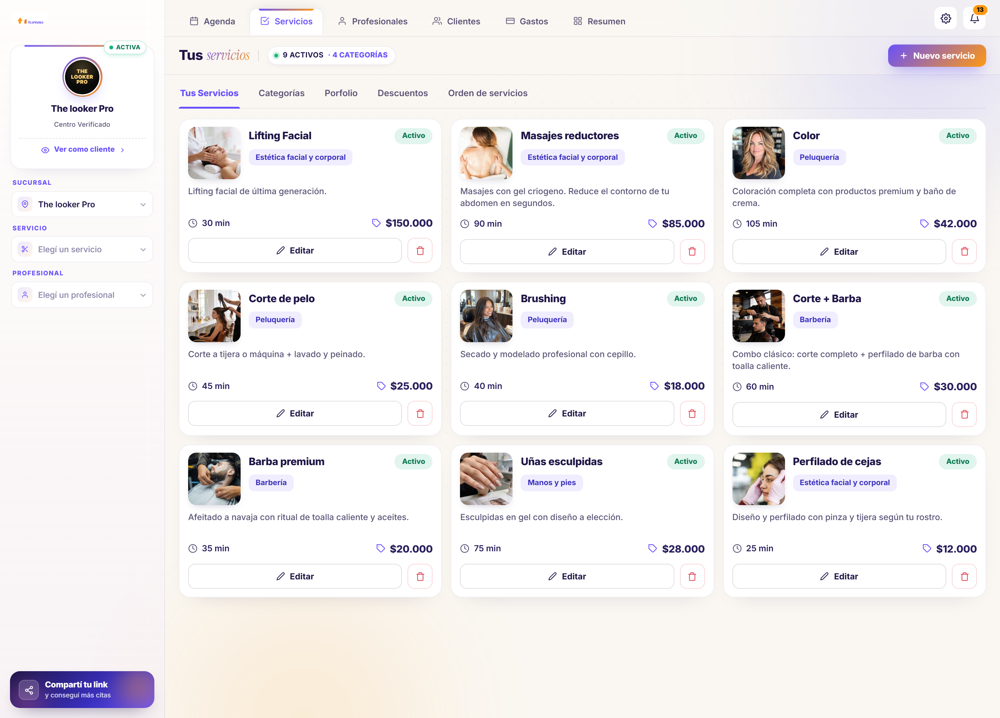
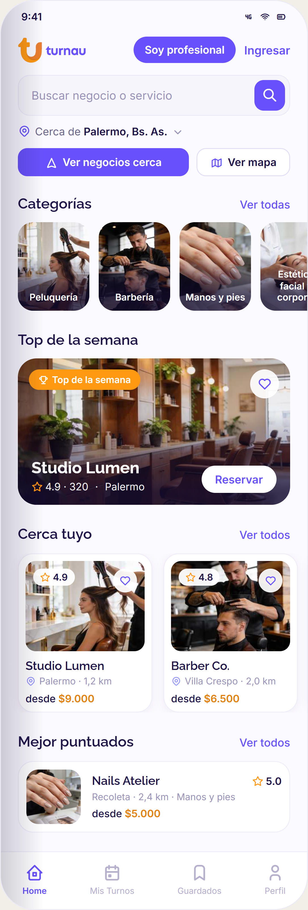

turnau se renovó
Más simple, más rápida y con todo tu negocio en un solo lugar. Esto es lo nuevo que ya está esperándote adentro.
Todo tu día, a un clic
La agenda nueva se navega sola: vista diaria, semanal o mensual, y un turno nuevo se carga en segundos. Menos pasos, menos vueltas — más tiempo para atender.

Arrastrá el turno y listo
¿Se movió un horario? Agarrá el turno y llevalo a su nuevo lugar, viendo la hora en vivo mientras lo arrastrás. ¿Cambió la duración? Estiralo desde el borde. Tu agenda se acomoda como vos querés, directo desde el calendario.

Tus servicios, ordenados
Organizalos en cápsulas por categoría y sumale una foto a cada servicio. Tus clientes encuentran lo que buscan al instante — y todo se ve como tu trabajo merece.

Mostrá tu trabajo, con historia
El portfolio ahora lleva una descripción en cada foto: qué servicio es, qué se hizo. Quien te descubre en el Marketplace no ve fotos sueltas — ve resultados con nombre y apellido.

🔒 Bloqueá horarios en dos toques
¿Salida rápida, trámite, almuerzo largo? Bloqueá el rango desde la agenda y nadie puede reservarte ahí. Tu tiempo, tus reglas.
🌿 Nueva categoría: Salud y Bienestar
El Marketplace se amplía: nutrición, kinesiología, terapias y más. Más rubros descubriendo Turnau — y más clientes nuevos buscando cerca tuyo.
👥 Agendas en paralelo
En la vista diaria, ves a todos tus profesionales lado a lado, cada uno en su columna. El día completo del equipo, de un solo vistazo.
📇 Cargá clientes solo con el WhatsApp
El email ya no es obligatorio: alcanza con el número para sumar un cliente. (El mail sigue sumando para que le lleguen los recordatorios — pero si no lo querés usar, ahora no hay drama.)
Que te encuentren más fácil
El buscador nuevo filtra por categoría, ubicación y ordena por cercanía, precio o valoración. Tu vidriera digital trabaja todos los días para traerte clientes nuevos.

Entrá y recorrela — está todo listo
Si ya usás Turnau, las novedades te están esperando. Si todavía no, este es el momento.
14 días gratis · sin tarjeta · en pesos, sin variación por el dólar